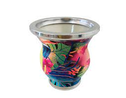
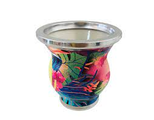

Tipos de mates
Cuando llega el momento de elegir, los mates de calabaza son los más populares; provienen de una planta trepadora llamada Legenaria siceraria que crece en América del Sur. La principal ventaja que ofrece, según los testimonios de los materos, es que los mates que se toman utilizando una calabaza, son más ricos, tienen un mejor sabor y de alguna manera recrean el ritual ancestral de beber mate, heredado de los guaraníes.
Los mates de madera son los más demandados, después de los de calabaza. Las maderas que más se emplean para hacerlos son: el algarrobo torneado, naranjo, cinamomo, cocobolo, palo santo (más común en Brasil), quebracho y roble. Los mates de madera se curan de una manera distinta a los de calabaza, hay que curarlos bien con algún elemento graso (manteca, aceite o grasa vacuna).
Los mates de vidrio, porcelana o cerámica. La principal ventaja de estos mates, es que el material de su interior es neutro e inorgánico, por lo que el mate no afecta el sabor de la yerba y es menos probable que junte hongos o bacterias. Es muy utilizado por los sommeliers, porque permite apreciar el sabor y aroma de la yerba mate en su totalidad. Es un mate muy fácil de limpiar, solo hay que tener cuidado de no mojar la virola, para que no se afloje, además no necesitan ser curados.
 
